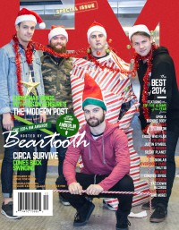

HM, Dec 2014, #185
| Cover |
|---|
|  |
 Online Exclusively Online Exclusively |
| Writers in this Issue |
| Francis, Matt Gonzales, Jordan Green, Tommy Huncherick, Sean Ketchum, Jameson Lake, Nate Long, Brooke Simula, Collin Stagg, David |
Beartooth
Cover Feature:- "A Guided Tour from Beartooth" by David StaggBeartooth and the annual HM awards
- "HM Live: The World Tour" by Brooke LongSleeping With Sirens, Pierce the Veil, Beartooth
- "Home for the Holidays" by Jordan Gonzales
- "The Final Interview" by Jameson Ketchum
- "Under the Influence" by Collin Simula
- "The Next Chapter" by Nate Lake
- "Southern Metal Finds a Home in the Trinity" by Sean Huncherick
- "Ryan Hayes of Righteous Vendetta"
- "Tay Jardine of We Are In The Crowd"
- The Dead Rabbits
- "Steven Tobi of The Nearly Deads"
- "Stef of City of the Weak"
- Project 86 - Knives to the Future by Sean Huncherick
- Levi The Poet - Correspondence by Jordan Gonzales
- Sullivan - Heavy is the Head by Sean Huncherick
- various artists - Punk Goes Pop 6 by David Stagg
- Copeland - Ixora by Sean Huncherick
- Brother Wolf - The Birthright by Collin Simula
- "An All-Star Summer of Love" by Matt Francis
- "We Visited the Killing Fields" by Tommy GreenCambodia
- "The Side-effects of Athiesm" by Collin Simula
Relevant Links
Official web site of HMOnline back issue publication
This issue is available exclusively online.
You may be able to find HM in a library near you: Worldcat

© 2011 CMnexus. Last updated December 2020. Contact: editor -AT- cmnexus -DØT- org About